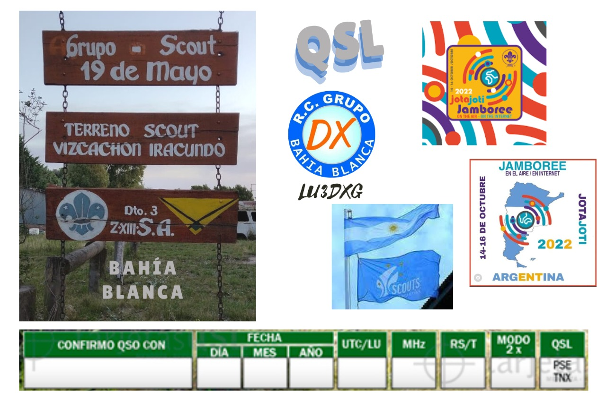

El Grupo Bahía Blanca DX ya es Club oficial desde el 28/2/2007.
BBDXG presenta esta nueva convocatoria del 21 al 28 de marzo regala una
Tarjeta QSL Especial A Todo Color Brillante
en todas las bandas y modos. (La imagen es un diseño frontal de QSL).
Sábado 21 al Domingo 29 de Enero de 2023
LU3DXG Estación Colaboradora
LU3DXG estará activado desde el Grupo Scout el 19 de mayo de Bahía Blanca.
QSL vía LW3EMT/ LW6EGE

Con motivo del 20 aniversario de la creación del Grupo DX Bahía Blanca
LU3DXG, se pondrá
al aire a partir del 1 de agosto de 2022 a las 00:00 UTC la Señal
Distintiva Especial (SDE) L20D. Por tal razón durante el mes de agosto
será posible el diploma
digital “20 años del Grupo DX Bahía Blanca” siendo el mismo destinado a
radioaficionados con licencia oficial y radioescuchas de todo el mundo,
cumpliendo
con los lineamientos de la resolución 2017-3635 ENACOM. . Por consultas
dirigirse a lw6ege@hotmail.com
Bases Se consideran para el presente DIPLOMA los contactos realizados desde el 1 (00:00 hs. UTC) al 14 (23:59 hs. UTC) de agosto del año 2022 con todas las estaciones colaboradoras y L20D, en esas fechas. Será necesaria al menos la realización de los siguientes comunicados: 1 (un) contacto con la estación L20D en cualquier banda y modo. 5 (cinco) provincias distintas de la república argentina de aquellos socios de la entidad que oficien como estaciones colaboradoras en cualquier banda y modo. Este listado se encuentra al final de las bases presentes. Se aceptarán comunicados en cualquier banda y modo establecidos dentro de la reglamentación vigente. Para la acreditación del diploma aquellos interesados deberán enviar el log con los contactos realizados a lw6ege@hotmail.com especificando al menos (ADIF preferentemente): Estación contactada, fecha y hora del comunicado (UTC), frecuencia, Modo y reporte de señales. No son válidos para este diploma aquellos comunicados realizados por medio de sistemas VOIP, como por ejemplo Echolink. Tampoco serán válidas aquellas comunicaciones realizadas por repetidoras.
PLATINO L20D y 24 provincias
ORO L20D y 15 provincias.
PLATA L20D Y 10 provincias
BRONCE L20D y 5 provincias
Los días 2 y 3 de abril se activará el Museo y Memorial a los Héroes de Malvinas MU 081 D ubicado en el Centro Cultural y de Gestión "Islas Malvinas" de la ciudad de Bahía Blanca.
En SSB y FT8 estarán en el aire LU3DXG/D en las distintas bandas. Los interesados en confirmar el contacto con la QSL digital evocativa que es válida para el Diploma "Museos Argentinos" del GDXBB deberán enviar los datos del qso al correo lw6ege@hotmail.com
LU4AAO. Radio Club QRM Belgrano
LU8ACH Alejandro
LU1AYL María Elena
LU9ALS Fernanda
LU2AOZ Walter
LU7DSY Carlos
LW6EGE Emiliano
LP1D Emiliano
LU1EUU Gerardo
LW3EMT Manuel
LU4DRH Darío
LW3EXJ María de los Ángeles
lu6ran Sergio
LU1RAF Mauro
LU7HEO Eduardo
LU7HW Gustavo
LU2HOD Eduardo
LU2LMA Gladys
LU8GCJAlicia
LU1WP Radio Club Trelew
LU9WGO Sergio
LU8WF Eduardo
LU8WDF Damián
LU1WBW Darío
LU4JVE Nadia
LU9GRE Hugo
LU9TUX Emaudi
LU6UBM Javier
LU5UFM Federico
LU8SAN Blas
LU1MAW Alejandro
LU1MED Mario
LU1MHC Horacio
LU1MME Mónica
LU5ILA Leticia
LU5YEC Mauricio
LU3YLF Liliana
LU1VYL Marina
LU8VCC Alex
LU7ODG Diego
LU9PZO Gabriela
LU3PEX Jerónimo
LU3QDFDiego
LU7QAY José Luis
LU1XJJ Patricia
LU3XEI Luis
LU3FCA Patricia
LU3FGG Gabriel
LU8NK Pablo
LU8XW. Radio Club Ushuaia
LT5X. Radio Club Ushuaia
LU1XU Miguel
LT7X Miguel
LU8KBH Darío